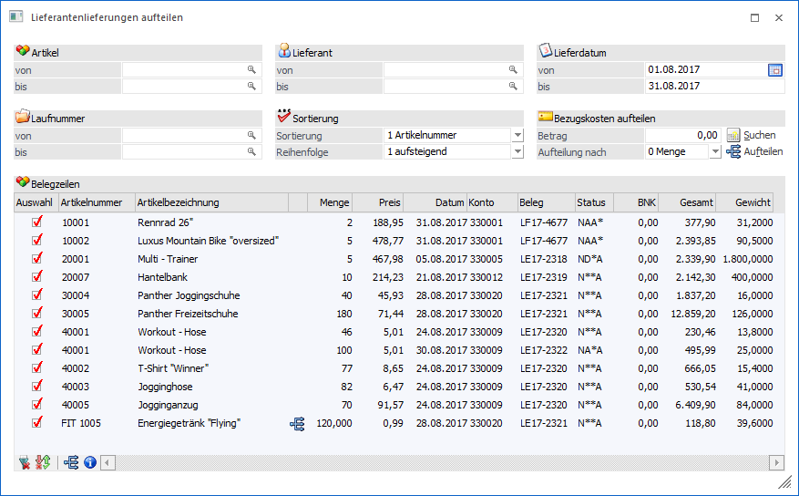
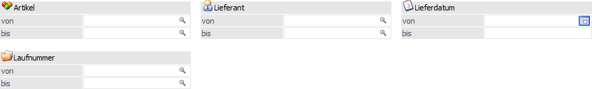
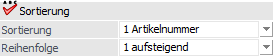
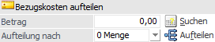
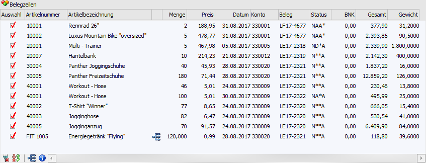
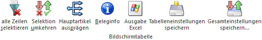

Unter dem Menüpunkt…
1 WinLine FAKT
1 Einkauf
1 Lieferantenlieferungen aufteilen
… können bereits gedruckte und / oder gerechnete Lieferantenlieferscheine bzw. -fakturen geändert werden. Folgende Änderung hierbei möglich:
ü Aufteilen der Bezugsnebenkosten auf die Artikelzeilen eines Eingangsbelegs (siehe Bereich "Bezugskosten aufteilen" und Tabellenspalte "BNK")
Beispiel
Der Erhalt der Speditionsrechnung erfolgt erst nach der Erfassung des Eingangsbeleges! Die Frachtkosten sollen nun auf die Artikel verteilt werden.
ü Hauptartikel nachträglich auszuprägen (siehe Tabellenspalte "Hauptartikel")
Beispiel
Es wurden z.B. 10 Räder zugebucht, aber noch nicht die einzelnen Seriennummern vergeben.
Hinweis
Alle folgenden Erläuterungen gelten gleichermaßen auch für Belege aus dem Bereich "Fertigung".

Es stehen folgende Einschränkungen, Einstellungen und Funktionen zur Verfügung:
Selektion

Ø Artikel von / bis
Mit Hilfe dieser Felder kann eine Einschränkung auf einen bestimmten Artikelbereich vorgenommen werden.
Ø Lieferant von / bis
An dieser Stelle kann eine Einschränkung auf einen bestimmten Lieferantenbereich erfolgen.
Ø Lieferdatum von / bis
Hier kann auf das Lieferdatum (Belegzeile) eingeschränkt werden.
Ø Laufnummer
An dieser Stelle kann eine Einschränkung auf den Lieferantenlieferschein bzw. die Lieferantenfaktura vorgenommen werden.
Sortierung

Ø Sortierung
Die Sortierung der Tabelle kann nach den folgenden Elementen vorgenommen werden:
ü 1 - Artikelnummer
ü 2 - Datum (Lieferdatum der Belegzeile)
Ø Reihenfolge
An dieser Stelle kann definiert werden, ob das Sortierungskriterium "1 - aufsteigend" oder "2 - absteigend" berücksichtigt werden soll.
Bezugskosten aufteilen

Bezugskosten können nachträglich auf die Artikelzeilen eines Beleges aufgeteilt werden, wenn z.B. die Faktura der Spedition erst nach der Erfassung des Eingangsbeleges eintrifft oder wenn diese automatisch nach einem bestimmten Kriterium aufgeteilt werden sollen.
Ø Betrag
An dieser Stelle werden die Bezugskosten, welche aufgeteilt werden sollen, entweder manuell eingetragen oder es wird nach einer bereits verbuchten Eingangsfaktura (Speditionsrechnung) gesucht und deren Betrag übernommen (siehe Button "Suchen").
Ø Suchen
Bei Anwahl des Buttons "Suchen" wird das Fenster "Fakturen Suchen" geöffnet, in welchen nach einer bereits verbuchten Kreditorenfaktura (auch wenn diese schon bezahlt ist) gesucht werden kann. Aus dem Suchergebnis kann der Betrag der Faktura anschließend in das Feld "Betrag" übernommen werden (hierbei wird der Netto-Fakturenbetrag verwendet). Nähere Information zu dem Fenster "Fakturen Suche" entnehmen Sie bitte dem Handbuch WinLine FIBU, Kapitel "Fakturen Suchen".
Ø Aufteilung nach
Mit Hilfe einer Auswahlliste kann definiert werden, nach welchem Verteilungsschlüssel die Bezugskosten auf die Belegzeilen aufgeteilt werden sollen. Folgende Varianten stehen zur Verfügung.
ü 0 - Menge
ü 1 - Wert
ü 2 - Gewicht
Ø Aufteilen
Durch Anwahl des Buttons "Aufteilen" werden die erfassten Bezugsnebenkosten, je nach eingestellter Aufteilungsart, auf die ausgewählten Belegzeilen der Tabellen übertragen (siehe Spalte "Auswahl").
Hinweis
Die berechneten Bezugsnebenkosten können in der Tabelle (Spalte "BNK") manuell editiert werden.
Tabelle "Belegzeilen"

Durch Ausführung der Anzeige wird die Tabelle gemäß der zuvor getroffenen Selektion gefüllt. In dieser können nicht ausgeprägte Hauptartikel aufgeteilt und Bezugsnebenkosten zugewiesen werden.
Ø Auswahl
Mit Hilfe dieser Option kann definiert werden, welche Belegzeilen bei der Verteilung der Bezugsnebenkosten berücksichtigt werden sollen.
Ø Artikel / Bezeichnung
In diesen Spalten werden die Artikelnummer und die Bezeichnung aus dem Lieferantenlieferschein bzw. der Lieferantenfaktura angezeigt.
Ø Hauptartikel
Handelt es sich bei der Belegzeile um einen unausgeprägten Hauptartikel bzw. nicht vollständig ausgeprägte Zwischenartikel, so wird diese Zeile mit Hilfe des Symbols separat hingewiesen. Per Doppelklick auf die Zeile oder durch Anwahl des Tabellenbuttons "Hauptartikel ausprägen" kann eine Aufteilung mit Hilfe des Fenster "Ausprägungen erfassen" vorgenommen werden (nähere Informationen zu dem Ausprägungsfenster entnehmen Sie bitte dem Handbuch WinLine FAKT, Kapitel "Ausprägungen erfassen).
Ausgenommen von einer Aufteilung sind Handelsstücklistenartikel und Artikel mit Lagerortverwaltung (d.h. mit hinterlegter Lagerortstruktur).
Des Weiteren müssen Zwischenartikel (anders als Hauptartikel mit Ausprägungen) immer komplett auf die letzte Ausprägungsebene aufgeteilt werden.
Hinweis
Bei Eingangsbelegen besteht die Möglichkeit Artikel nicht auszuprägen, sondern die gesamte Stückzahl auf den Hauptartikel zu buchen. Erfolgt an dieser Stelle das Ausprägen "nachträglich", so werden folgende Datenbereich nach dem Speichern der Ausprägungen (Button "Ok" bzw. Taste F5 im Fenster "Ausprägungen erfassen") sofort aktualisiert:
ü Im Beleg wird die Zeile mit dem nicht aufgeteilten Hauptartikel um die aufgeteilte Menge reduziert. Des Weiteren werden Zeilen mit dem aufgeteilten Hauptartikel und den Ausprägungen eingefügt.
ü Im Artikeljournal wird die Zeile mit dem nicht aufgeteilten Hauptartikel um die aufgeteilte Menge reduziert. Des Weiteren werden Zeilen mit dem aufgeteilten Hauptartikel und den Ausprägungen eingefügt.
ü Der Artikelstamm und die Artikelperioden werden für die Ausprägungen aktualisiert.
ü Wenn der Beleg bereits als Faktura gedruckt wurde, wird auch die Statistik aktualisiert, d.h. es wird eine Hauptartikelzeile mit der aufgeteilten Menge negativ und Zeilen mit den Ausprägungen eingefügt.
Ø Menge
In diesem Feld wird die gelieferte bzw. abgerechnete Menge der Belegzeile dargestellt.
Ø Preis
In dieser Spalte wird der Einzelpreis der Belegzeile angezeigt.
Ø Datum
An dieser Stelle wird das Lieferdatum der Belegzeile angezeigt.
Ø Konto / Name (optionale Spalte) / Laufnummer (optionale Spalte) / Beleg / Status
In diesen Spalten werden der Lieferant mit Name und die Laufnummer des Belegs mit Belegnummer und der Status angezeigt.
Ø BNK
An dieser Stelle werden die Bezugsnebenkosten angezeigt und können editiert werden. Änderungen an den Kosten werden durch Anwahl des Buttons "Ok" bzw. der Taste F5 gespeichert und alle relevanten Bereiche aktualisiert (siehe auch Button "Ok").
Ø Gesamt
In der Spalte "Gesamt" wird der Gesamtbetrag der Belegzeile (Menge x Preisfaktor x Einzelpreis x Rabatt 1 x Rabatt 2) ausgewiesen.
Ø Gewicht
An dieser Stelle wird das Gesamtgewicht (Menge x Einzelgewicht aus der Belegzeile) dargestellt.
Ø Colli
In dieser Spalte wird der Colli der Belegzeile dargestellt.
Tabellenbuttons

Ø alle Zeilen selektieren
Mit Hilfe dieses Buttons werden alle Belegzeilen selektiert.
Ø Selektion umkehren
Bei Anwahl des Buttons werden die selektierten Datensätze deselektiert und umgekehrt.
Ø Hauptartikel ausprägen
Handelt es sich bei der Belegzeile um einen unausgeprägten Hauptartikel, so kann durch Anwahl des Tabellenbuttons "Hauptartikel ausprägen" eine Aufteilung mit Hilfe des Fenster "Ausprägungen erfassen" vorgenommen werden (nähere Informationen siehe Tabellenspalte "Hauptartikel").
Ø Beleginfo anzeigen
Mit diesem Button kann der Beleg der markierten Belegzeile am Bildschirm ausgegeben werden.
Ø Ausgabe Excel
Durch Anwahl des Buttons "Ausgabe Excel" wird der Inhalt der Tabelle nach Microsoft Excel übergeben.
Ø Tabelleneinstellungen speichern
Die Spalten einer Tabelle können grundsätzlich an beliebige Positionen verschoben, bzw. in der Breite entsprechend angepasst werden. Durch Anwahl des Buttons "Tabelleneinstellungen speichern" werden die Einstellungen benutzerspezifisch gespeichert und bei dem nächsten Aufruf des Programmpunktes wieder vorgeschlagen.
Ø Gesamteinstellungen speichern
Im Gegensatz zu "Tabelleneinstellungen speichern" können mit "Gesamteinstellungen speichern" mehrere Tabellenaufbauten gespeichert und nach Wunsch geladen werden. Zusätzlich werden Sonderfunktionen der Tabelle (z.B. "Spalte gruppieren") ebenfalls bei der Speicherung bedacht.
Buttons
Ø Ok
Nach Drücken Buttons "Ok" bzw. der Taste F5 werden die Bezugsnebenkosten gespeichert und in folgenden Bereichen eine Aktualisierung ausgelöst:
ü Belegzeilen
ü Artikeljournal
ü Artikelperioden
ü Artikelstamm
ü Einstandspreis
ü Statistik (wenn bereits eine Faktura gedruckt wurde)
Ø Ende
Durch Anwahl des Buttons "Ende" bzw. der Taste ESC wird das Fenster geschlossen und nicht gespeicherte Bezugsnebenkostenaufteilungen verworfen.
Ø Anzeigen
Nach Anwahl des Buttons "Anzeigen" wird die Tabelle "Belegzeilen" (gemäß der zuvor getroffenen Selektion) mit alle Artikelzeilen aus gedruckten oder gerechneten Lieferantenlieferscheinen bzw. -fakturen gefüllt.